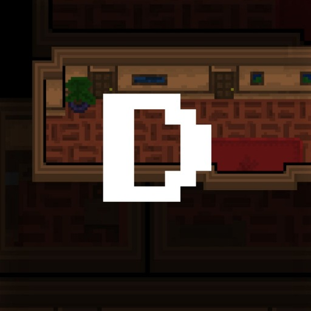
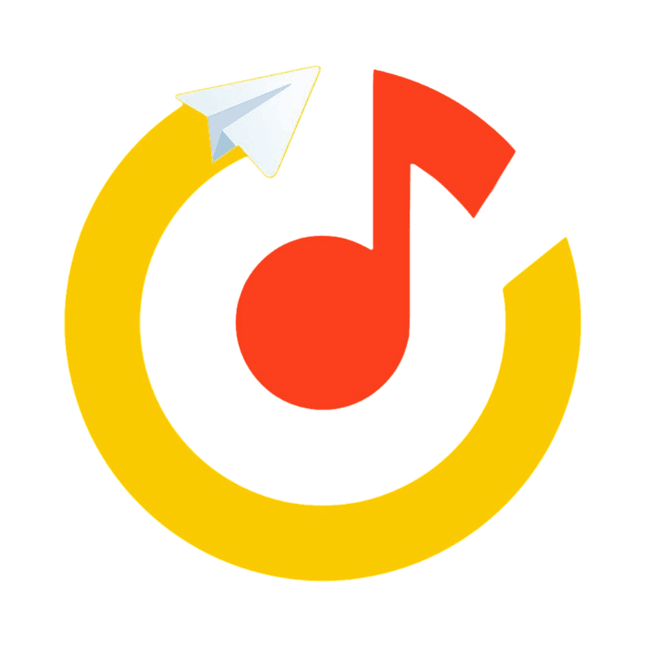

Про меня
Приветствую тебя на этой странице!
Я начинающий/junior разработчик на Java и C#.
Также иногда разрабатываю приложения на Python, C++
Также умею работать с Git, GitHub, Android dev., Android Studio, Linux, Bash, HTML, CSS, Unity, VirtualBox, Arduino
Учусь в IT-колледже Университета Сириус
В 2023 году стал призером конкурса "Всероссийский IT-раунд"
Список некоторых моих проектов можешь посмотреть ниже

Dark
Технодемка визуальной новеллы Dark. Приложение написано с нуля под Android, использовано Java и XML

YMMBBot
Телеграм бот, который показывает какая песня сейчас играет в Яндекс.Музыке. Форк проекта моего знакомого (проект заморожен)